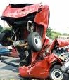

Beals Up Sticks
& Move
Melanie and Scott have sold their home in Alabama and bought another in Georgia. The welcomed move should dramatically cut Scott's daily commute and finally solve the issue with the neighborhood bully. The couple and their two children, busy with preparations for the move, were unavailable for comment.
Shira's Dramatic Brush with Death

This month Shira, 17, and boyfriend Jeremy, 18, were stopped in their car waiting to turn by Briscoe School when they were viciously hit from behind by a car traveling at a reckless 35 miles an hour. Initial eyewitness reports indicating that the pair were, in fact, canoodling and not paying sufficient attention to the road have been strenuously denied by both the couple and their families. The rear end collision did little damage to the car or the couple (who both walked away with only mild neck injuries) but could leave an indelible mark on Shira's less-than-perfect driving record. "Now poor Shira has been in three crashes since [age] 16 so her auto insurance will be nasty" said her distraught mother Saturday. When asked to comment Shira said that although this crash felt worse than the one with Uncle Marvin (in which her vehicle was totaled) she has no intention of turning in her license, going to driving school or exploring an alternative mode of transportation.
Diana Comes Undone
Diana played her harp this week for two Ashland wards in her first public appearance since her illness last summer. But the night didn't quite go off without a hitch because the harp (which had to be transported through the rain) succumbed to dampness and was thrown out of tune. Diana explained, "It goes out of tune so easy. I'll need to re-string it now--all 32 of them."
Tiana and Hyrum
Wear Out Big Rig  Tiana and Hyrum have swapped out their old truck for a new one in Portland this week. Their old truck had been through more than 500,000 miles, a honeymoon and the potty-training phase of two miniature pinschers. It was time for a fresh start.
Tiana and Hyrum have swapped out their old truck for a new one in Portland this week. Their old truck had been through more than 500,000 miles, a honeymoon and the potty-training phase of two miniature pinschers. It was time for a fresh start.
Narrow Defeat
Blamed on Mother
Twins Dallas and Weston took second and third place in the Pinewood Derby race this month at the church in Ashland. When asked to comment upon their performance they said they were disappointed not to get first place but don't blame themselves. According to the twins, it was their safety conscious mother, Diana, who lost the race for them by not allowing them to use the secret rocket boosters they'd initially planned on. But they are taking their loss in stride and have decided that there is more to life than toys without fire power.
Twins Take Senior Citizens by Storm
The twins are doing Meals on Wheels this week. They have been helping with this service since they were two. Their mother drives them and they do all the work including picking up and distributing the meals as well as visiting with the elderly upon delivery. Recipients of the program know the boys now and say how much they have loved watching them grow through the years. The Twins, like their brother Dane, love to serve others so much. They spend a lot of their free time visiting the elderly, helping them move, cutting their wood and doing landscaping for them. The twins are so beloved by the aged community now that they're often invited to go out cycling around town by a pack of 70 year olds! Now that's service.
|
|
Twins Get Revenge on Teachers
For the first time in their elementary school careers, the twins decided to take advantage of their brotherly-likeness to play an April Fools Day prank on their unsuspecting Bellview teachers--they decided to switch places. Dallas was initially afraid of disastrous repercussions, but Weston was more than willing and tried his best to convince his brother that it was their last chance to get even before they left for middle school next year. Dallas remained unconvinced. It was only after their mother, Diana, stepped in and pledged to straighten everything out, if it got out of hand, that Dallas finally agreed. Preparations for the trade could finally begin in earnest. The boys wasted no time in getting their hair cut the same to maximize the chameleon effect. Though their haircuts were identical, something still threatened to give them away; the difference in their sizes (Weston: 5' 3" & 110 lbs. Dallas: 5' 3 ½" 125 lbs.). Masking this was tricky but it turned out to be less of a problem than expected. Weston's teacher was completely oblivious to the switch until, after a long period of time, Dallas had an attack of conscience and confessed. But Dallas's teacher was a bit more on-the-ball and recognized the swap right away. None of the students seemed to be fooled either. Most of them are beyond being confused by the twins by now. An anonymous third grader explains, "It easy to tell which one is Weston because his mouth goes down on one side when he gets mad."
Blood-Red Eyesore Gets Makeover
After its kitchen counters were voted the ugliest in Jackson County (in an unofficial family poll) the Cluff family had new counters installed last week with the help of master carpenter, Uncle Clayton. "We really needed new counters as our red ones, from 20 years ago, were beginning
to grate" said unconventional decorator, Diana Cluff. It's hard to believe that blood-red counters could become tiresome, but the Cluff's went through years of trying to mask the blinding crimson surfaces. "I painted them purple when I changed the kitchen to purple and then white when the kitchen was white and, at one point, I even had them wallpapered! But that didn't work." Indeed. Diana's incessant and unconventional decorating fetish has been a source of speculation in the family for years. One family member, who wishes to remain anonymous, thinks that Diana's desire to constantly redecorate stems from her deep hatred of the house and Dennis's decision to buy it without her total approval. "Things like the crazy rainbow color schemes, the tin-foiled bathroom and the Jungle themed living room (complete with waterfalls and rubber snakes) are more than just a cry for help--they are manifestations of a deep psychological desire to punish her husband for insisting she move into a house she wasn't completely satisfied with. I think, unconsciously, she's hoping that her wild, bright and gaudy décor will turn the house into an uninhabitable spectacle--thus forcing the family to look elsewhere for accommodation. Only then does she win." But not everyone agrees. According to Diana, her 11 year old son, Dallas, loves the wild decor. "When we were peeling off the layers of paint in the kitchen, Dallas saw 27 years worth of wallpaper and went crazy over all the colors. I think he has my taste, because everyone else hates the colors." (An art appreciation fund is in the process of being organized by concerned family members). But even Dallas agreed that it was time for a change when it came to the kitchen surfaces. "The counters were all gross and moldy with old paint peeling off of 'em 'n' stuff" said a disgusted Dallas. Redoing the massive Cluff kitchen would be no easy task. And it was made even more difficult by the Cluff's Noah-like collection of appliances (two ovens, two ranges, two refrigerators, two sinks etc.), a jigging nightmare for the counter-fitter. "It was such a big job that Clayton had to spend the night" confessed Diana. But the final outcome seemed to be worth the effort. "I really love them! Mom picked the right colors" raved daughter Tiana Saturday. Diana says she chose the colors in less than 30 seconds from a huge selection. "I picked light earth tones with a kind of swirl stone pattern." The surprisingly muted selection threw our anonymous family member for a loop. "I must say, I wasn't expecting this. After 27 years, maybe she's finally learned to accept her fate and live in harmony with the house."
Pip Pip & Tally-ho to Jolly ol' England
This month Dennis, Diana and their three youngest boys (Nial, Dallas and Weston) braved the terrorist-stricken, SARS infested airways to travel (in time of war) to London to visit their 5th, and favorite, child Daisha and her son Dakota. Dennis and Diana also booked a quick side trip to Norway - ancestral homeland and location of Dennis's three-year mission, 40 years ago. Suitcases laden with American treats for Daisha (dill pickles, salsa and ziploc baggies) the Cluffs set out, only to find that their flight had been cancelled (despite a confirmation the night before) because of the war. The whole fiasco was finally sorted out and they were put on another airline, but the flight was plagued with severe turbulence and Diana was sick - several times. Weak and pale-green the Cluffs finally limped off their plane and into London. With Dennis being the only one from the group to have visited London before (over 40 years ago), there was plenty for all to see and be fascinated by. The Cluffs were immediately struck by the quiet reserve of the English. "They are so quiet wherever they go," says a bewildered Diana. "Almost no one wears loud colors in clothing or makeup. They don't want to attract attention. I brought orange shirts for Dad and the twins and I wore a purple shirt and got looks that made me feel weird." The Cluffs then turned their attention to the architecture. "London is full of buildings that look like the ones we condemn and tear down in the US," Diana observes. "And they charge outrageous prices for them. Daisha's apartment would sell for about £350,000 and it isn't even as good as the first junky old apartment Dad and I had in 1969." Next they seemed to notice the size differences in everything from the (small) cars to (small) food portions to (small) people. Once a whirlwind tour of the city was complete, the Cluffs began to concentrate on the hot tourist spots. They visited the Tower of London, the London Eye, six or seven of the cities best museums, Westminster Abbey, St. Paul's Cathedral, Buckingham Palace, the Greenwich Observatory and several Royal Parks. They also took a river cruise, saw a play on the West End and a concert at the Royal Albert Hall. When asked to comment about what they liked best about London, the answers were varied. Diana said, "We've seen so much great art, history, culture and science in London that it's hard to choose. I love walking the busy streets and looking at all the great people. I love the big double-decker red buses, the red telephone booths, the fancy old buildings [so much for condemning the buildings--eh?] jammed together along the narrow streets, and the Bobbies--especially on horseback. But the gorgeous English gardens are my favorite. Regent's park, by Daisha's house, is so big and outstanding with lakes, ponds, rose gardens, hills, playing fields and much more that it makes our Lithia Park look like a postage stamp." Dennis agrees with Diana but tends to favor the museums over the parks. Nial, Dallas and Weston agreed unanimously on their favorite part of London--Dakota's playstation.
Killer Walker Attacks Dennis--Twice
On a recent trip abroad, Dennis Cluff, loving father of ten, looked death in the face twice and survived. In each of these near fatal incidents the main culprit was, shockingly, an unruly walker! After surgery to release a trapped nerve last year, Dennis was advised to use a walker for support when attempting to cover long distances. Europe, with its narrow cobble streets, crowded cities and lack of elevators, turned what was supposed to be a helpful aid into THE WALKER OF DEATH. Dennis's first brush with death came in Norway as he and his walker were balancing precariously on the uneven surface of a steep down escalator. The wheels of the walker suddenly gave way and Dennis began to slip. Dennis's wife Diana tried, in vain, to hold on to the walker. "I thought we were going to tumble down the long, moving metal steps and get sucked up like spaghetti at the bottom," says a distraught Diana. "But suddenly a huge Viking grabbed Dad by the back of his clothes and lifted him to a standstill. We both thanked him for saving us." The second walker death-trap incident was during a seemingly harmless walk through the park. Diana explains, "Dad was getting tired of walking so Dallas, our fourth son, volunteered to push him in his walker [which has a built-in seat]. Dallas was running, as all the boys did when pushing, when suddenly the walker hit a storm drain, stopped, folded up and crashed. Dad flew off and landed on his back and head and Dallas landed on top of him. We all ran to them thinking that Dad had broken his back, but, aside from having the wind knocked out of him and several nasty cuts, he was unharmed. "Poor Dallas was just out of his mind with guilt," Diana says "he was crying and shaking." But everything turned out ok, so all's well that ends well--as they say in jolly ol' England.
London Bridge is Falling Down: Cluff Boy's London Diary
Day 1: Dallas gets lost in the tube station. "We took the lift," Diana reports "but he didn't get on with us. I was so worried. Dad and Edward went off looking for him, but just after they left Dallas showed up. He had managed to find his way down four flights in rush hour traffic to the right place. He had tears in his eyes, but I was so proud of him."
Day 2: Dallas attempts English. Eager to learn how to speak English once and for all, Dallas decides to put his "talent" for mocking to good use. He picks up the tone, but not the accent, resulting in an intensely irritating hybrid that plagues his fellow travelers (and anyone within a 20 foot radius) for the entire trip.
Day 3: Weston refuses an opportunity to visit Westminster Abbey.
Day 4: Weston announces that he wants to visit Westminster Abbey.
Day 5: Dallas and Weston leave National Gallery after 10 minutes, as they wish to go home
to play playstation.
Day 6: Twins develop serious gas problem. Window must remain open during a severe thunderstorm.
Day 7: Twins drive parents insane. Diana reports, "The twins can't keep their hands off
each other or stop their twin-talk that sounds like retarded boys. They pull faces and writhe around like banshees everywhere we go. They get lots of sideways glances from the people on the tube. Dad and I say this is the last trip we will take them on."
Day 8: Weston begs to go to Westminster Abbey.
Day 9: Apartment noise level is extremely high. Downstairs neighbor contemplates buying illegal assault weapon.
Day 10: Nial gets kicked out of the children's play area after telling the attendant he cannot remember how old he is.
Day 11: Dallas, who hates underwear, insists on spending the day "commando".
Day 12: Dallas takes a dive. Dallas was unwisely sliding down the metal railing in a tube station when he fell off and tumbled down a flight of cement stairs with a crack and a thud. Diana, Dallas's long-suffering mother explains, "I thought we would have to call the Bobbies to get an ambulance to come pick him up, but he just acted like nothing happened and jumped up and kept walking to the tube. Dallas has always had a problem with falling down. I think he's built up a resistance now."
Day 13: Dallas expresses fervent desire to go to the National gallery to look at paintings.
Day 14: Twins are chastised by British Museum curator.
Day 15: Weston pleads to go to Westminster Abbey.
|
|
Diana
Goes to the Dogs
 Diana Cluff is a dog hater--no longer! In an unprecedented 180º turn, Diana has suddenly embraced man's best friend with an enthusiasm that suggests she's making up for lost time. It was Hyrum and Tiana's miniature pinschers (Cowboy and Indian) that seemed to do the trick. Tiana insists that the dogs bark like crazy when she asks if they want to see 'Grandma' because they know and love her. But is this reason enough for Diana to turn her back on decades of doggie-hatred, canine slander and puppy prejudice? It may be too early to tell, but reports have suggested that she's already letting the dogs into the house, onto her bed and even under her sweatshirt to keep warm! Some skeptics are blaming this extraordinary behavior on Diana's recent illness, but this is only speculation. The most plausible explanation for this sudden transformation is that the dogs in question are small, short-haired and relatively infrequent visitors--not the hairy, disobedient mongrels the family usually owns. Diana only says, "I can't believe I am a dog lover now. I still don't want one of my own, too much work, but dogs are like children--so cute...but work."
Diana Cluff is a dog hater--no longer! In an unprecedented 180º turn, Diana has suddenly embraced man's best friend with an enthusiasm that suggests she's making up for lost time. It was Hyrum and Tiana's miniature pinschers (Cowboy and Indian) that seemed to do the trick. Tiana insists that the dogs bark like crazy when she asks if they want to see 'Grandma' because they know and love her. But is this reason enough for Diana to turn her back on decades of doggie-hatred, canine slander and puppy prejudice? It may be too early to tell, but reports have suggested that she's already letting the dogs into the house, onto her bed and even under her sweatshirt to keep warm! Some skeptics are blaming this extraordinary behavior on Diana's recent illness, but this is only speculation. The most plausible explanation for this sudden transformation is that the dogs in question are small, short-haired and relatively infrequent visitors--not the hairy, disobedient mongrels the family usually owns. Diana only says, "I can't believe I am a dog lover now. I still don't want one of my own, too much work, but dogs are like children--so cute...but work."
Nial Sprouts
This week Nial, 15, has finally managed to hit the 5'10" mark in what seems to be his most dramatic growth spurt yet. He now towers over his Mom and has even managed to shoot past his Dad. "The small shirts in adult size are getting too short for Nial, so I have to buy him medium now" said his bewildered mother today. His weight, however, is sadly struggling to keep up with the new development and is still below that of his younger brother Dallas (4 years his junior). But Nial is coping well with his disadvantage and working hard to catch up with a brisk daily workout consisting of a rigorous weight lifting session in the gym followed by a two mile run on the High School track.
Trucking Nightmare
Tiana Johnson, 26, isn't afraid to drive her big-rig along the dark swampy road to Miami called Alligator Strip. She's not scared of the low bridges in New York (bridges: 12' 7", truck: 12' 6 ½") and she's not even afraid of the violent freeways in LA! She only got her trucking certification a year ago after husband, Hyrum, taught her everything she needed to know. She's done a great job and everything has been fine--until last week! Tiana and Hyrum had just left LA and were headed to Utah when they ran into a terrible snowstorm. Tiana had to drive through horrifying blizzard conditions to Denver, then on through Eisenhower pass and to Nebraska. The snow on the road was over eight inches deep. At one point she had to park the truck to wait for the snow-plows to clear the path ahead because they couldn't get through. Tiana says, "Each time it was my turn to drive it would start to snow! Then there was always another steep downhill. I got so scared that I had to call for Hyrum, and when he saw what was happening, he tensed up too." Tiana said her shoulders and neck were in knots as they made their way through the nasty storm, but that Hyrum help to relieve her stress with a nice shoulder rub as she drove. After 400 miles of bad snow, and just when they had had enough, things finally began to clear up. She'd done it! And now, Tiana Johnson isn't afraid of anything (except this).
Dad in Women's Clothes
On a recent trip abroad Dennis Cluff, seemingly masculine father of ten, was seen walking the streets of London in women's clothing. Diana explains, "Dad wouldn't wear a raincoat and it was always raining. He'd caught a cold and I didn't want it to get any worse, so I put my girly, red raincoat on him." Despite the gathered sleeves and flared hemline, Dennis received little negative attention in a situation that would have been social suicide in the US. Although European men's fashion proved to be more accommodating (men can be seen all over town wearing capri-pants and carrying 'purses' without batting an eye) Dennis wasn't convinced. "He put up with it at first," Diana giggles "but didn't want to wear it again the next day".
Mother Detests Nial
At the birth of their third boy Dennis decided that, after a run of five girls, it was his turn to pick the child's first name. Dennis wanted "Nial" but his wife, Diana, was determined to have Britten. During her pregnancy Diana was convinced that she was winning the battle on sympathy points when tragedy struck. With the baby weighing in at over 11 pounds, the birth proved difficult and Diana was put under for an emergency C-section delivery. Hours later, she awoke in a haze to find that the deed had been done--the baby's name was Nial. It was a controversial decision then and remains so today. Diana complains, "I still don't like the name Nial and still want to call him Britten, like we'd planned [before he was born]. I hope he calls himself N. Britten Cluff when he is an adult." When asked which name he prefers, Nial (now 15) says he doesn't care what people call him.
|